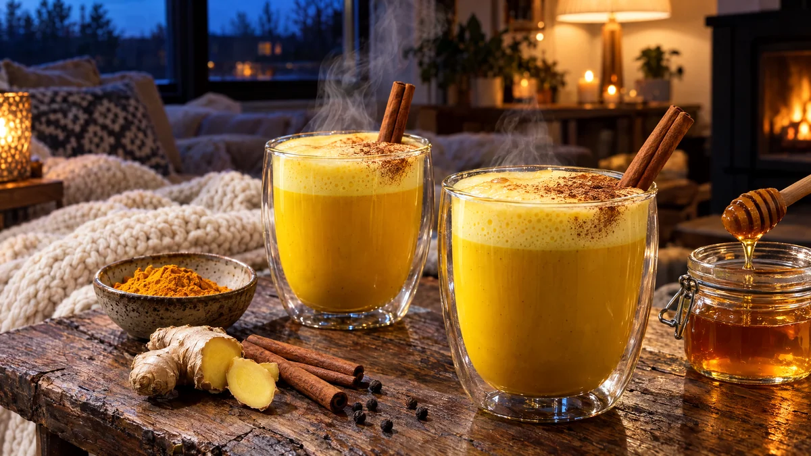

RESTFEST · RECEPTDryck
Gyllene mjölk med ingefära, kanel och honung
Gurkmejan som står orörd i kryddhyllan, mjölk och en sked honung blir en lysande gul, skummig dryck som värmer ända ut i fingrarna. Den serveras i glas med ett damm av kanel och en kanelstång. Perfekt en mörk novemberkväll i soffan.
- Förberedelse
- 5 min
- Tillagning
- 10 min
- Portioner
- 2
- Nivå
- Nybörjare
 Det här behöver du
Det här behöver du
Tryck på + vid det du behöver köpa.
Till servering
Vegansk variant
- Byt mjölken mot havredryck (barista-variant skummar bäst) och honungen mot ljus sirap.
Gör så här
- Vispa gurkmeja, kanel, ingefära, svartpeppar och vaniljsocker med ½ dl kall mjölk i en kastrull, tills det blir en slät pasta utan klumpar.
- Vispa i resten av mjölken och smöret. Värm på medelvärme under omrörning i ca 5 minuter, tills mjölken ångar och precis börjar sjuda. Låt den inte koka.
- Sänk värmen och låt sjuda försiktigt i 2 minuter, så att smakerna går ihop.
- Ta av kastrullen från värmen och rör ner honungen. Smaka av och tillsätt mer honung om du vill.
- Sila genom en fin sil om du har använt färsk ingefära.
- Skumma mjölken med en mjölkskummare eller stavmixer i ca 30 sekunder, tills den är luftig.
- Häll upp i två värmetåliga glas eller koppar och skeda över skummet.
Dekoration och servering
- Pudra kanel genom en liten sil över skummet, gärna bara över ena halvan för en snygg kontrast.
- Ställ en kanelstång i varje glas.
- Använd genomskinliga, värmetåliga glas så att den gyllene färgen syns.
- Gurkmeja färgar, så skölj kastrull och visp direkt efter användning.
Mått och ugnstemperaturer
Måtten är svenska (dl, msk, tsk, krm). Ugnstemperaturerna gäller vanlig ugn med över- och undervärme; med varmluft, sänk med 20 grader.